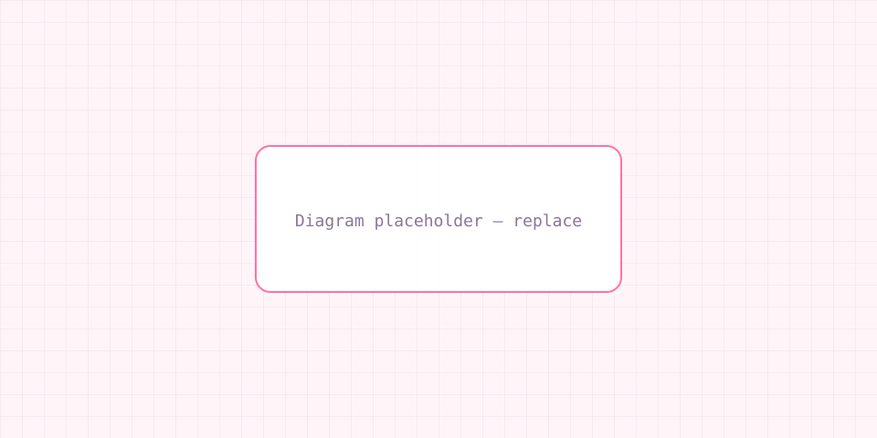
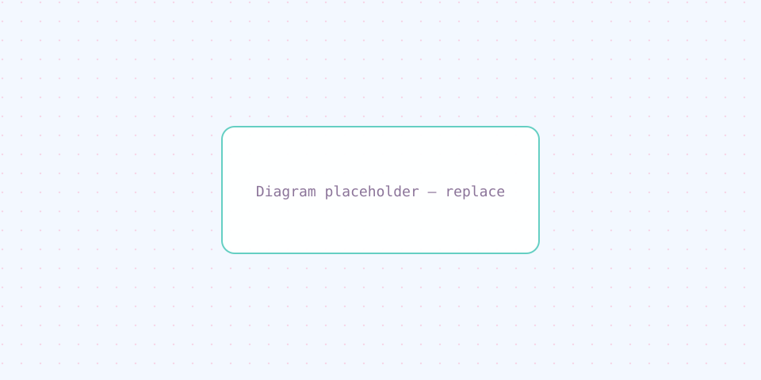

About Me
안녕하세요. 사용자와 서비스 관점에서 안정적인 백엔드를 만드는 것에 관심을 두고 있는 개발자입니다.
Java와 Spring 생태계를 중심으로 API 설계부터 배포까지 전 과정을 학습했으며, 장애 대응과 운영을 고려한 코드 작성을 지향합니다.
앞으로는 팀과 협업하며 테스트·모니터링·인프라 경험을 넓히고, 읽기 좋은 아키텍처로 비즈니스 가치를 돕고 싶습니다.
- 학교 경인여자대학교
- 전공 소프트웨어융합학과
- 관심 분야 풀스택웹개발
- 이메일 gyn38k@gmail.com
Tech Stack
Infra
Database
Collaboration
Featured Projects
프로젝트 A
예약·결제 병목을 줄이기 위한 백엔드 API와 운영 자동화를 구축한 서비스입니다.
- Java
- Spring Boot
- MySQL
- AWS
- 인증·권한 분리 및 세션/토큰 정책 적용
- 주문·재고 도메인 트랜잭션 설계
- 배포 파이프라인 및 로그·모니터링 연동
- 부하 테스트 기반 설정 튜닝

프로젝트 B
학습 목적의 풀스택 앱으로, 사용자 요청을 신속히 처리하는 API를 제공합니다.
- Spring Boot
- JPA
- Docker
- MySQL
- JWT 기반 인증 및 사용자 CRUD API
- 도커 Compose로 로컬·배포 환경 통일
- Github Actions 빌드·배포 자동화

Trouble Shooting
개발 과정에서 직접 해결한 문제들
문제 상황
리스트 조회 시 연관 엔티티가 개수만큼 추가 쿼리가 발생해 응답 시간이 길어졌습니다. (예시 텍스트)
원인 분석
기본 fetch 전략(LAZY)에서 컬렉션 접근 시마다 추가 SELECT가 발생했습니다.
해결 방법
@EntityGraph 또는 fetch join으로 한 번에 조회하거나, 배치 크기 설정으로 IN 쿼리를 묶었습니다.
결과 / 배운 점
불필요한 쿼리 수가 줄어 목표 응답 시간을 맞출 수 있었고, 앞으로 목록 전용 조회와 DTO 투영을 분리할 필요성을 깨달았습니다.
문제 상황
배포 후 컨테이너가 간헐적으로 재시작되거나 OOM으로 종료되었습니다.
원인 분석
컨테너 할당 메모리 대비 JVM 힙 설정이 과하고, 피크 시 RSS가 한계를 넘었습니다.
해결 방법
Docker 메모리 제한과 힙/메타공간 플래그를 정렬했고 필요 시 배치 크기·캐시 상한도 조정했습니다.
결과 / 배운 점
안정적인 가동 시간을 확보했고 운영 환경에서 리소스 캡과 JVM 옵션을 함께 설계해야 한다고 정리했습니다.
문제 상황
배포 직후에도 사용자 화면에 이전 버전 에셋이 보이거나 404가 섞였습니다.
원인 분석
TTL과 Origin 설정이 맞지 않거나 캐시 무효화가 누락되어 오래된 객체가 제공되었습니다.
해결 방법
캐시 키·헤더를 정리하고 무효화 경로를 자동화하거나 버전 접두어(Cache busting)를 적용했습니다.
결과 / 배운 점
정적 리소스 배포 플로우와 CDN 무효화를 문서로 남기는 게 팀 속도에 도움이 된다고 느꼈습니다.
문제 상황
액세스 토큰 만료 후 예상치 않은 401 연속 발생 또는 무한 리프레시가 보고되었습니다.
원인 분석
클라이언트 재요청 타이밍과 서버 검증 순서가 엇갈렸고, 리프레시 토큰 재발급 정책이 일관되지 않았습니다.
해결 방법
만료·블랙리스트·단일 디바이스 정책 등을 명확히 하고 재발급 API와 예외 처리 흐름을 정리했습니다.
결과 / 배운 점
인증은 API 스펙뿐 아니라 클라이언트 동선까지 포함해 설계해야 한다는 점을 배웠습니다.
문제 상황
특정 필터 조합에서 목록 API 평균 지연이 임계치를 초과했습니다.
원인 분석
조건 컬럼에 적절한 복합 인덱스가 없어 풀 스캔에 가까운 플랜이 선택되었습니다.
해결 방법
EXPLAIN으로 플랜을 확인 후 정렬·필터 순서에 맞는 인덱스를 추가하고, 불필요한 SELECT 컬럼을 줄였습니다.
결과 / 배운 점
기능 추가 시 쿼리 플랜 리뷰를 습관화하면 회귀를 줄일 수 있다고 정리했습니다.
Architecture
직접 구성한 AWS 인프라 구조
User / Browser
웹 클라이언트에서 서비스 접속
CloudFront (CDN)
엣지에서 정적 자산 전달·API 경로 분기
S3 (React)
빌드 산출물 호스팅·버전별 정적 배포
EC2 (Spring Boot)
Docker 기반 API·비즈니스 로직 처리
RDS (MySQL)
트랜잭션 데이터 영구 저장·백업 정책
사용자 요청은 HTTPS로 CloudFront에 도달하고, 정적 UI는 S3 오리진에서 캐시·전송됩니다. API 트래픽은 동일 엣지를 통해 EC2의 Spring Boot로 프록시되며, 영속 데이터는 RDS MySQL에서 관리합니다. 비용·지연·운영 편의를 균형 있게 맞추기 위해 CDN·오브젝트 스토리지·관리형 DB 조합을 선택했습니다.
Docker API는 Docker 이미지로 패키징해 EC2에서 동일한 런타임으로 기동·스케일하며, 배포 재현성과 롤백 속도를 높였습니다.
Blog & GitHub
Blog
블로그 더 보기GitHub
GitHub 프로필-
service-api
12 3예약·주문 도메인 REST API와 결제 연동 실습 프로젝트입니다.
- Java
- Spring Boot
-
batch-worker
8 1Spring Batch로 일일 집계 잡을 구성한 샘플 레포입니다.
- Java
- Gradle
-
infra-notes
5 0AWS·Docker 배포 메모와 스크립트를 모아 둔 문서형 레포입니다.
- Shell
- Markdown
커밋 메시지와 README를 꾸준히 관리하고 있습니다